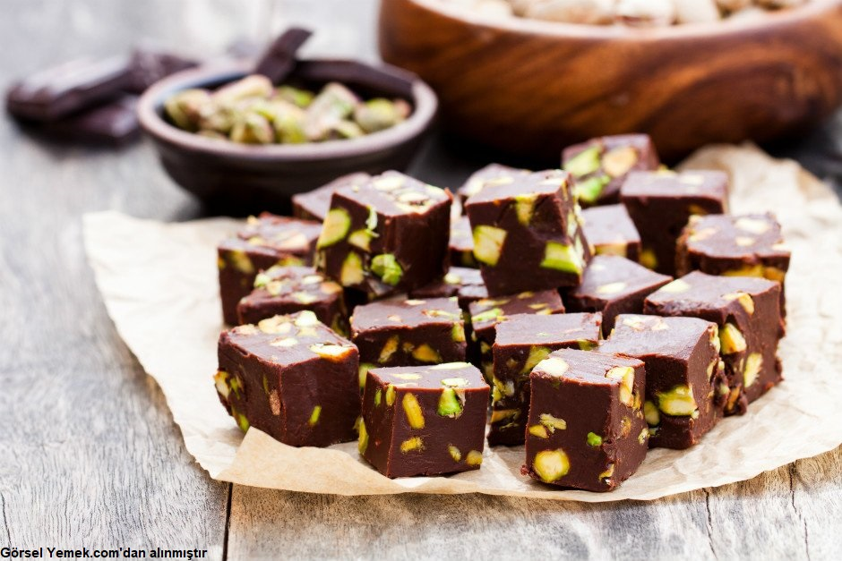

çikolatalı ve şam fıstıklı tadımlık lezzetler... Yalnızca 4 malzeme ile hazırlanan çikolata küpleri, renkli kağıtlarda veya kürdan batırılarak servis edilir. Özellikle kalabalık sofralarda yer verilen çikolata küpleri doğum günü gibi özel etkinliklerde de sunulabilir.
Tarif: Rukiye Beyza Sarıkaya
|  |
Kaç Kişilik: 4 Kişilik Hazırlama Süresi: 30 dakika Pişirme Süresi: 10 dakika Çikolata Küpleri Tarifi İçin Malzemeler..
Çikolata Küpleri Tarifi İçin Malzemeler..
Afiyet Olsun |